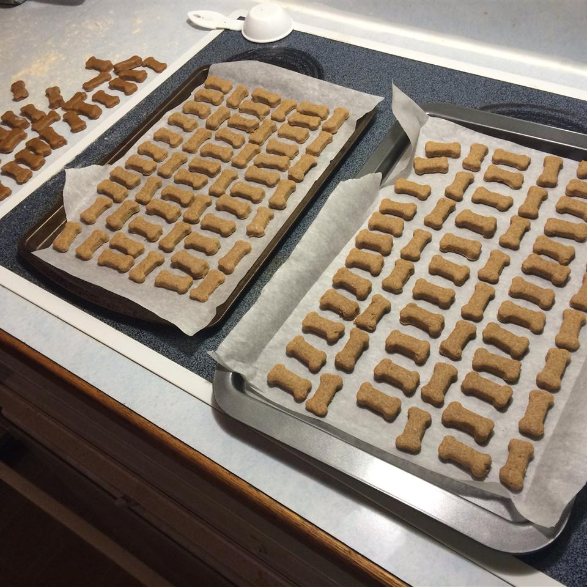

Peanut butter and banana dog biscuits

Description
You can't have a buddy's recipe page without some actual dog food. These are peanut butter and banana dog biscuits that use a relatively small list of ingredients and can be done in just under an hour.
Ingredients
- 1 egg
- ⅓ cup peanut butter
- ½ cup mashed banana
- 1 tablespoon honey
- 1 cup whole wheat flour
- ½ cup wheat germ
- 1 egg white, lightly beaten, for brushing